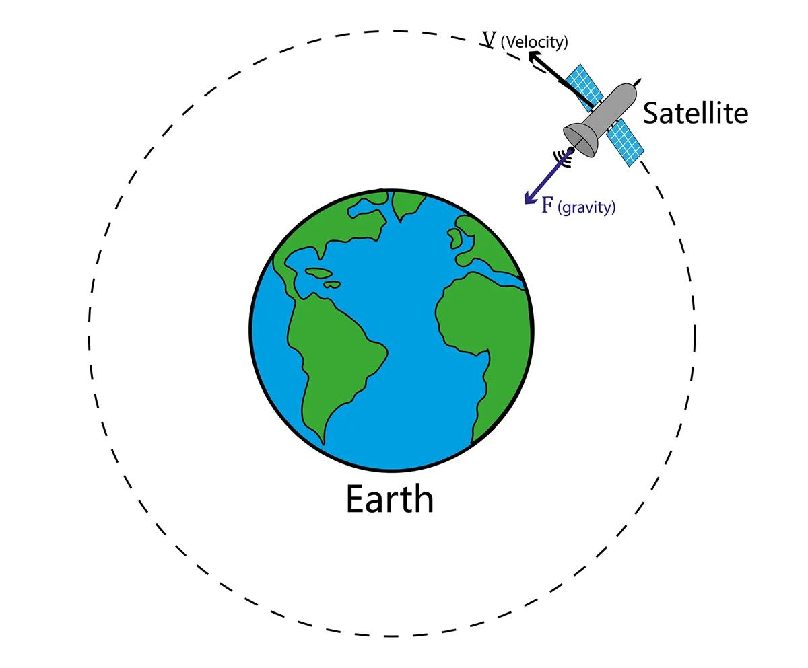
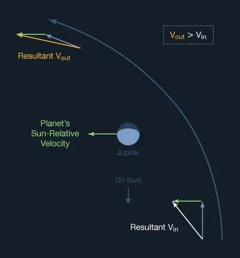

Baner rundt jorden
En satellitt holder seg i bane fordi den beveger seg raskt nok til å falle rundt jorden i stedet for rett ned. Tyngdekraften trekker satellitten mot jorden, mens hastigheten gjør at den fortsetter fremover.

En satellitt holder seg i bane fordi den beveger seg raskt nok til å falle rundt jorden i stedet for rett ned. Tyngdekraften trekker satellitten mot jorden, mens hastigheten gjør at den fortsetter fremover.
Delta-v beskriver hvor mye et romfartøy kan endre hastigheten sin. Det brukes til å planlegge oppskytinger, baneendringer og reiser mellom planeter. Mengden drivstoff og motorens effektivitet påvirker hvor mye delta-v et romfartøy har tilgjengelig.

Romsonder kan bruke tyngdekraften fra en planet til å endre retning og hastighet. Denne teknikken kalles gravitasjonsassistanse og gjør det mulig å nå fjerne planeter med mindre drivstoff.
Romfartøy reiser vanligvis ikke i en rett linje mellom planetene. De følger baner som påvirkes av solens tyngdekraft. En Hohmann-overføringsbane er en metode for å flytte et romfartøy mellom to sirkulære baner med relativt lite drivstoff